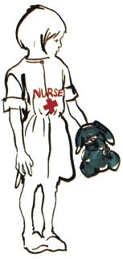

Country Lore
MY CHILDREN ENJOY PLAYING "hospital," and all their sick dollies and stuffed animals are getting even better care, now that their doctors and nurses are dressed in regulation white coats. I made the uniforms from discarded dress shirts (thrift shops sell them for about 10 cents apiece), and each coat took only 10 minutes or so to make. First I cut off the collar (which, with the ends sewn together, makes a nurse's cap), leaving the band with the collar button. I cut off the sleeves about three-quarters down, turned back the raw edges twice, and sewed the hem to form a cuff. Then, at the child's waistline, I sewed a length of elastic around the inside of the shirt. If you stretch the elastic taut as you stitch it, the fabric gathers nicely. A red cross with the name "Doctor" or "Nurse" above it-made with permanent marking pens-finishes off the outfit. The children love them.
Lisa Anne Zack
Johnson City, New York
In MOTHER No. 109, Alaskan Marti Bradley wrote that the colder the weather, the easier it is to split firewood. I agree, but with the warning that when the thermometer dips way below freezing outdoors, you'd better store your ax indoors. I learned the hard way: I tried chopping wood with a very cold ax, and I ended up with a severely chipped blade.
-Joseph J.Mack
Deming, New Mexico
Cold mornings call for hot, tasty nourishment, and my favorite breakfast on a winter day is oatmeal. I mash a ripe banana in the cereal bowl, pour in my cooked oatmeal and stir it well. Mmmmm-it's easy and delicious, and good for you, too.
- Cal McQuiggan
Vienna, Ontario
You can improvise a great bird feeder in just a few minutes by spreading peanut butter over a large pinecone and rolling it in birdseed. Tie a string to the cone to hang it from a limb. More feeders will bring more birds, but remember to keep on providing food once you start.
- Fred A.Race
Euclid, Ohio
Sprinkle unused cat litter on icy steps, stoops and sidewalks. It melts ice like salt does, but won't harm plants, and it keeps smooth surfaces from becoming slick from the meltwater. Litter does cling to shoes, however, so keep mats at the entry doors for wiping feet.
- MargaretShatters
Great Bend, Kansas
If you've ever had to file a claim for loss of valuables because of theft or fire, you know that most insurance companies require some sort of proof. Lists and sales receipts are helpful, and photographs are good. Even better, and much more efficient, is a video camera-recorder. If you don't own or can't borrow one, a rental unit is fairly inexpensive. It's best to have two people: one to operate the camera, and another-you, the homeowner-to walk through the house, staying in full view, identifying each item. This will also help if you have to report stolen property to the police, though it's important to record serial numbers of electronic equipment. Don't forget to store the tape in a safedeposit box or other equally safe place.
- Joe D.Perdue
Nellysford, Virginia
To thicken soup, just stir in some instant mashed potatoes until the broth reaches the consistency you prefer.
-Mrs. Willie C. Newsome
Lenore, West Virginia
You won't believe how easily this works until you try it! To clean the soot off the glass doors of your fireplace, just dab a dampened paper towel into the ashes and rub the blackened glass. Polish with a dry paper towel.
-Gayle Daniels
Visalia, California
When I store tomato-based sauces in plastic refrigerator dishes, or microwave such foods as chili and spaghetti sauce in plastic bowls, I usually end up with red stains in the containers. When this happens, I put a few tablespoons of lemon juice in each dish, fill it with water and let it soak. In a short time the stains are gone.
- C.Cole
West Haven, Connecticut
It's often quite a chore to put on and take off winter boots, especially if your socks are thick and the boots have fabric liners. Your feet will slide in a lot easier if you cut an old pair of ladies' stockings or pantyhose into sections about five inches long, and slip one of these tubes over each sock, making sure your heels are covered.
- Thomas LaMance
Prewitt, New Mexico
Don't throw out the ashes you shovel from your woodstove or fireplace. Sieved through an old window screen, they can be mixed with clean, dry sawdust for a good sweeping compound for oily concrete floors.
- Bert Lemmon
White Pigeon, Michigan
Foam tubing, made for insulating water pipes, is usually sold in packs of four tubes, 36 inches long. It's fairly inexpensive, and I've found some great uses for it-in addition, of course, to its intended purpose. Our toddler's attempts to navigate are less harrowing now that the metal and wood table legs are cushioned against falls, and we also slipped foam tubes over the vertical bars of the playpen, to make it safer for the baby. Then, in the garage and on the driveway, we padded portions of electrical cord and garden hose that lay across rough surfaces and were driven over.
- Regie Lartz
Airville, Pennsylvania
Living in a rural area brings an additional feeling of isolation to families with handicapped children. There are so few sources of advice and comfort for the special challenges involved in parenting and home management. If you are one of these parents, you can help both your own family and others in similar situations. Ask your pediatrician if you can hang a bulletin board in the waiting room, and make the same request at the community center or the library. Tack up a few 3 X 5 cards, each with a tip or some advice: perhaps how you've adapted a normal household item to your child's needs, a humorous or inspiring story, or how your family copes with stress. Invite others to share their experiences, and soon your bulletin boards will overflow with ideas to help and support your neighbors with special needs.
- JudyWatson
Woodbine, New Jersey
Through the years we've all discovered a few practical, time-tested solutions to some of the frustrating little problems of everyday life. Send your own suggestions to Country Lore, Mother Earth News, P. O. Box 70, Hendersonville, NC 28793. Each contributor whose tip is printed in this column will receive $20.
|
 Lisa Anne Zack |
|
|